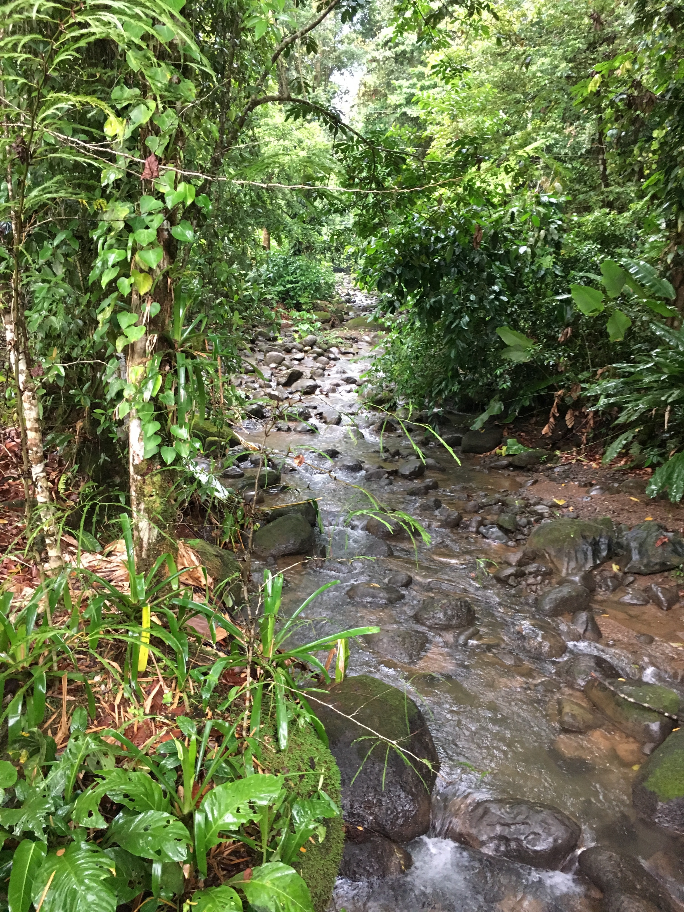

Jazmyn Rivera

Links
I am a student at the University of Michigan. I am in my third year in the School of Information. I study User Experience, with a double minor in Computer Science and Latino Studies. I love working with anything related to technology and creativity.
My work experience includes a summer internship in 2018 with Quicken Loans. I was part of their technology team that worked on software solutions for their loan bankers. During the last school year, I worked with ArtsEngine, interdisciplinary department on campus that focuses on combining arts and engineering in various departments on campus. Currently I work with C.S. Mott's Children Hospital and the College of Engineering. At C.S. Mott's, I am on the database team, working on the UI of the doctor's digital chart software. At the College of Engineering, I help develop and manage the MDP website.
My future plans include working in UX/UI, app development, and web design.
I also love to travel, my dog, and music!
